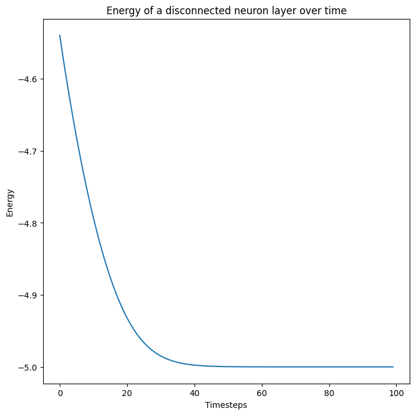
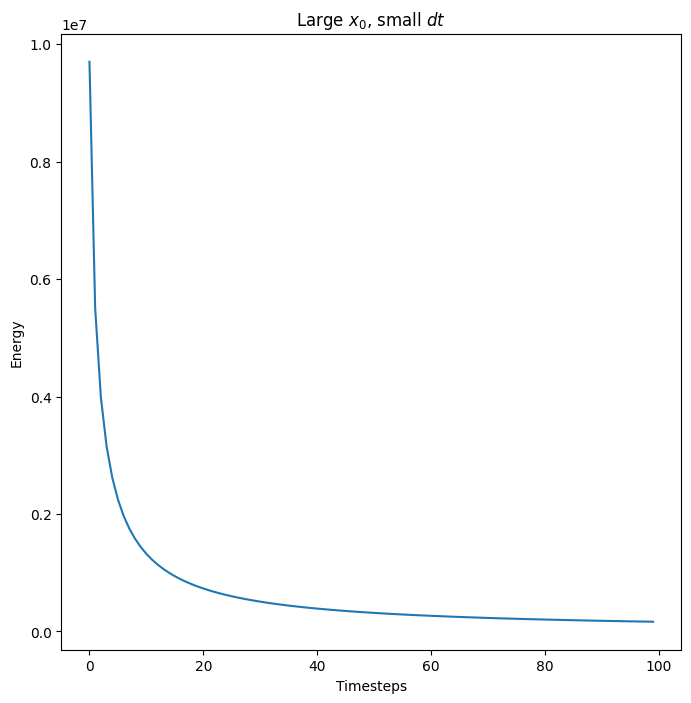

Neuron Layers
Turning Lagrangians into building blocks for our network
Fundamentally, a neuron layer is nothing more than a lagrangian function on top of data. This Lagrangian completely defines both an energy and an activation for the layer. In practice, we additionally specify the following in addition to the Lagrangian:
- A
shape - A time constant
tau - A
bias(optional) that we can view as the activation threshold of a neuron layer
Our neuron layers are extensions of the neuron layer as it is commonly incorporated in feedforward architectures. The primary difference is that our neuron layers evolve their state \(x\) over time and have a bounded energy function on their states. The energy function of our neuron is completely defined by its Lagrangian \(\mathcal{L}\)
\[E_\text{layer} = \sum\limits_i x_i g_i - \mathcal{L}(x)\]
where \(g = \nabla_x \mathcal{L}\) are the “activations”. The first component is a summation of the elementwise multiplication between \(x\) and \(g\). The second term is the Lagrangian. This energy function is the direct consequence of the Legendre transform on the Lagrangian.
We can view a neuron layer of shape (D,) as a collection of \(D\) neurons holding scalar data. Convolutional networks frequently have activations defined atop images or image patches of shape (H,W,D). We can view layers of this shape as a collection of \(D\) neurons each of shape \((H,W)\). Lagrangians that reduce over a particular dimension (e.g., the softmax) will typically reduce over the neuron dimension \(D\).
Layer
Layer (lagrangian:treex.module.Module, shape:Tuple[int], tau:float=1.0, use_bias:bool=False, init_lagrangian=False, name:str=None, **kwargs)
The energy building block of any activation in our network that we want to hold state over time
| Type | Default | Details | |
|---|---|---|---|
| lagrangian | Module | Factory function creating lagrangian module describing | |
| shape | typing.Tuple[int] | Number and shape of neuron assembly | |
| tau | float | 1.0 | Time constant |
| use_bias | bool | False | Add bias? |
| init_lagrangian | bool | False | Initialize the lagrangian with kwargs? |
| name | str | None | Overwrite default class name, if provided |
| kwargs |
Initialize with a lagrangian
Layer(LExp(beta=5.), (32,32,3))Layer {
bias: None,
lagrangian: LExp {
beta: 5.0, Parameter
min_beta: 1e-06,
name: "lexp", str
},
name: "layer", str
shape: tuple [
32,
32,
3,
],
tau: 1.0,
use_bias: False,
}Layer.energy
Layer.energy (x)
The predefined energy of a layer, defined for any lagrangian
Layer.__call__
Layer.__call__ (x)
Alias for self.energy. Helps simplify treex’s .init method
Layer.activation
Layer.activation (x)
The derivative of the lagrangian is our activation or Gain function g.
Defined to operate over input states x of shape self.shape
Layer.g
Layer.g (x)
Alias for self.activation
Layer.init_state
Layer.init_state (bs:int=None, rng=None)
Initialize the states of this layer, with correct shape.
If bs is provided, return tensor of shape (bs, *self.shape), otherwise return self.shape By default, initialize layer state to all 0.
| Type | Default | Details | |
|---|---|---|---|
| bs | int | None | Batch size |
| rng | NoneType | None | If given, initialize states from a normal distribution with this key |
Convenience Layers
It is nice to package commonly used lagrangians into their own kind of layers, e.g., IdentityLayers or SoftmaxLayers. We create a helper function to do that in this section.
MakeLayer
MakeLayer (lagrangian_factory:Callable, name:Optional[str]=None)
Hack to make it easy to create new layers from Layer utility class.
delegates modifies the signature for all Layers. We want a different signature for each type of layer.
So we redefine a local version of layer and delegate that for type inference.
| Type | Default | Details | |
|---|---|---|---|
| lagrangian_factory | typing.Callable | ||
| name | typing.Optional[str] | None | Name of the new class |
Our utility that we use to create these “convenience layers” is a bit hacky, but it works by injecting the lagrangian and the expected arguments for the lagrangian into our Layer utility. However, the hack loses the ability to inspect docstrings of the original neuron layer.
Energy Analysis
Most of all, every neuron layer has an energy. This is defined by the following equation:
\[E_\text{layer} = \sum\limits_i x_i g_i - \mathcal{L}(x)\]
The first component is a summation of the elementwise multiplication between \(x\) and \(g\). The second term is the lagrangian.
Let us create a layer with state \(x\) and initial state \(x_0\). Let us then evolve \(x\) over time by simply descending the energy of the neuron layer. Note that this neuron layer is not connected to anything, but we still expect it to reach a fixed point where the energy of the layer reaches a fixed point.
\[\tau\frac{dx}{dt} = -\frac{dE_\text{layer}}{dx}\]
Code
shape = (5,); key = jax.random.PRNGKey(0); k1, k2, key = jax.random.split(key,3)
layer = ExpLayer(shape,beta=1.).init(k1, jnp.ones(shape))
x0 = layer.init_state(rng=k2)
@ft.partial(jax.jit, static_argnames=("alpha",))
def next_x(layer:Layer, # Neuron layer
x:jnp.ndarray, # Current state
alpha:float): # Step size
dEdx = jax.value_and_grad(layer.energy)
E, dx = dEdx(x)
next_x = x -alpha * dx
return E, next_x
x = x0
Es = []
for i in range(100):
E, x = next_x(layer, x, 0.1)
Es.append(E)
fig, ax = plt.subplots(1)
ax.plot(np.stack(Es))
ax.set_title("Energy of a disconnected neuron layer over time")
ax.set_ylabel("Energy")
ax.set_xlabel("Timesteps")
plt.show(fig)2022-12-02 01:13:11.068186: E external/org_tensorflow/tensorflow/compiler/xla/stream_executor/cuda/cuda_driver.cc:267] failed call to cuInit: CUDA_ERROR_NO_DEVICE: no CUDA-capable device is detected
WARNING:absl:No GPU/TPU found, falling back to CPU. (Set TF_CPP_MIN_LOG_LEVEL=0 and rerun for more info.)
The energy is bounded for any initial neuron state \(x\) (though at some point the values are numerically too large for the exponential we are using as the activation function)
Code
x = 100*x0
Es = []
for i in range(100):
E, x = next_x(layer, x, 5e-8)
Es.append(E)
fig, ax = plt.subplots(1)
ax.plot(np.stack(Es))
ax.set_title("Large $x_0$, small $dt$")
ax.set_ylabel("Energy")
ax.set_xlabel("Timesteps")
plt.show(fig)